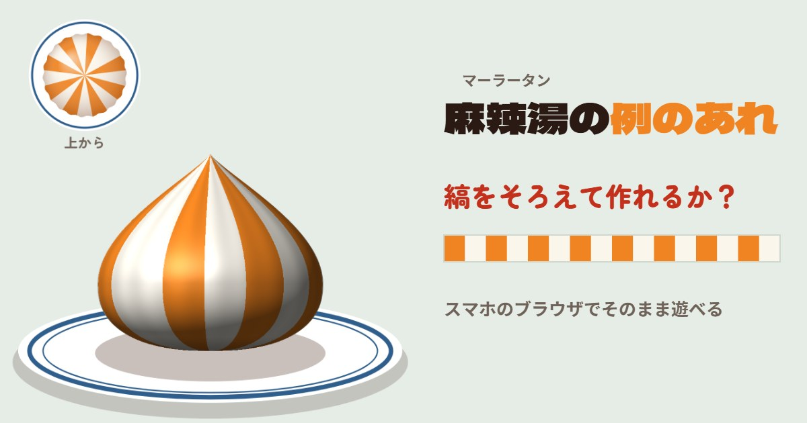

GAME
麻辣湯（マーラータン）の
麻辣湯（マーラータン）の例のあれ
マーラータンに入っている、縞々のあの団子。

| ジャンル | ワンタッチ |
|---|---|
| プレイ時間 | 1回5秒ほど |
| 制作ツール | HTML ／ JavaScript |
| 公開日 | 2026.10.21 |
| 動作環境 | スマホのブラウザ（縦画面） |
▶ ブラウザで遊ぶ
ダウンロード不要、スマホのブラウザ（縦画面）でそのまま遊べます。自己ベストは本数ごとに、遊んでいるブラウザに保存されます。
どんなゲーム？
マーラータンに入っている、縞々のあの団子を自分で作るワンタッチゲームです。押すと団子がちょうど1周だけ回り、押している間だけオレンジ、離すと白が塗られます。オレンジと白をかわりばんこに、同じ幅でそろえて塗れるか。1周すると横から見た団子ができあがり、点数と称号、マーラータンの小ネタが出ます。
遊び方
- 縞の本数を選ぶ：4本（まかない）／8本（屋台）／12本（名人・回る速さがゆらぐ）
- 押している間だけオレンジ、離すと白。選んだ本数だけ、白とかわりばんこに同じ幅で塗る
- 点数は縞の幅のそろい具合と、オレンジの本数で決まる（100点満点）
- 「Xに投稿」で、結果の画像と文を投稿できる
点数と称号
- 95点以上「伝説の団子職人」
- 85点以上「屋台の看板」
- 70点以上「一人前」
- 50点以上「見習い」
- 30点以上「まかない係」
- それ未満「具が迷子」